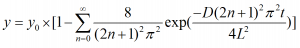

非線形曲線フィットの実行時にPython関数を使用できます。Python関数と、その関数に必要なPythonパッケージをインストールするためのスクリプトコマンドを含むフィット関数ファイル（FDFファイル）を作成する必要があります。
次のサンプルで、Python関数を使用してFDFを作成する方法の概要を示します。
このセクションでは、Pythonを関数を使って次の質量拡散方程式のフィッティング関数を作成する手順の概要を説明します。

from mpmath import nsum, exp, inf
import numpy as np
def MassDiffuse(x, y0, D, L):
sm = [float((nsum(lambda ii: 1/(2*ii+1)**2*exp(-D*(2*ii+1)**2*np.pi**2*t/(4*L**2)),[0, inf]))) for t in x]
return [y0*(1-8/np.pi**2*t) for t in sm]
のようにPython関数(Vector) 編集ボックスに入力します。次に
MassDiffuse(x, y0, D, L)
のように関数式編集ボックスに入力します。
if(Python.chk("mpmath numpy") > 1)
return 1;
return 0;
のようにPythonパッケージ確認（LabTalkスクリプト）に入力します。この関数は、mpmath および numpyパッケージが必要です。関数使用前にこれらをインストールする必要があります。パッケージをインストールするには、Originの接続メニューにあるPythonパッケージツールを使用できます。他のOriginユーザと関数を共有する場合は、Originに関数を追加するときに自動でパッケージをインストールするように設定できます。
0.00 -0.078 0.20 0.604 0.40 0.842 0.60 1.101 0.80 1.029 1.00 1.083 1.20 0.828 1.40 0.884 1.60 0.991 1.80 1.005 2.00 0.915
パラメータの初期値には以下を入力します。
y0 = 1, D = 0.5, L = 0.5
そしてフィットを実行します。最終的なパラメータ値は以下の通りです。
フィット値: y0 = 0.97846, D = 0.37563, L = 0.43781